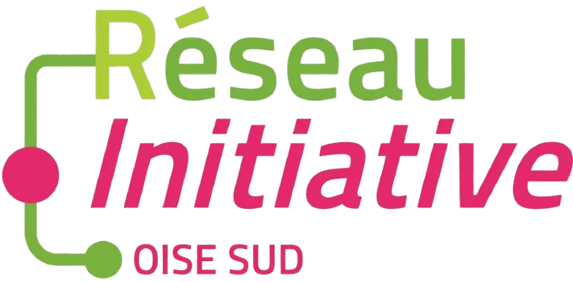
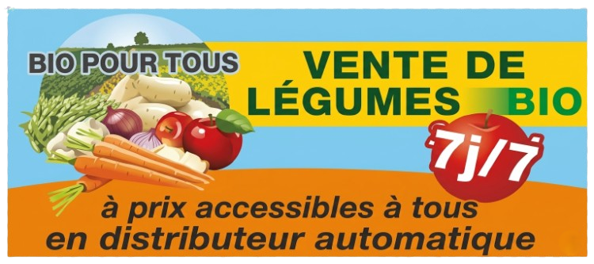
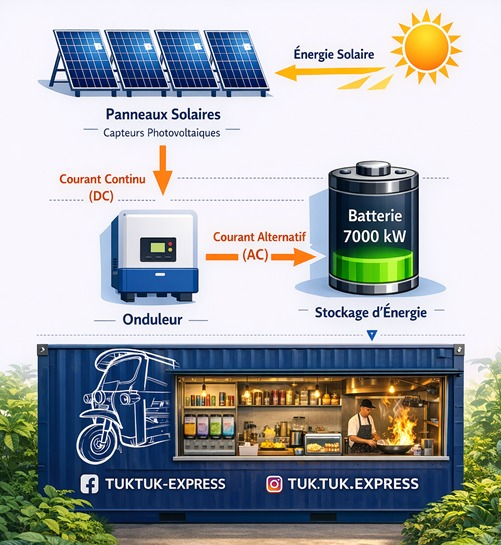

Notre partenaire financier
Le projet TukTuk-Express bénéficie du soutien de France Active Picardie – Sur Oise, acteur engagé dans le financement de projets entrepreneuriaux à impact local.
Ce partenariat renforce la solidité du projet, tout en s’inscrivant dans nos valeurs : entrepreneuriat responsable, ancrage territorial et dynamisme économique local.

Notre partenaire agricole
Nous collaborons avec BIO POUR TOUS, situé à Rousseloy, spécialiste des fruits et légumes biologiques.
Ce partenariat nous permet de proposer des plats préparés à partir de produits frais, de saison et biologiques, tout en soutenant le circuit court. La cuisine vietnamienne reposant sur la fraîcheur, ce choix garantit une qualité authentique.
La stratégie d'implantation
C’est dans un cadre d’impact positif que TukTuk-Express souhaite s’implanter.
Reconnu pour son équilibre de vie, son cadre verdoyant et sa convivialité, le lieu choisi doit permettre de créer une valeur ajoutée dans le respect de « l’esprit de village ».
Notre objectif est la proximité, l’attractivité et le dynamisme partagé avec la ville d'accueil.

Un impact positif
Le projet s’engage dans une démarche éco-responsable en utilisant des panneaux solaires pour produire 70% de son énergie.
L’électricité ainsi générée est stockée dans des batteries pour alimenter l’ensemble de la cuisine du kiosque, réduisant drastiquement notre empreinte carbone.
Chaque plat préparé allie saveur, fraîcheur et respect de notre environnement commun.